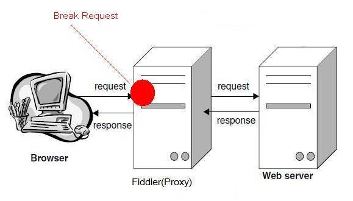
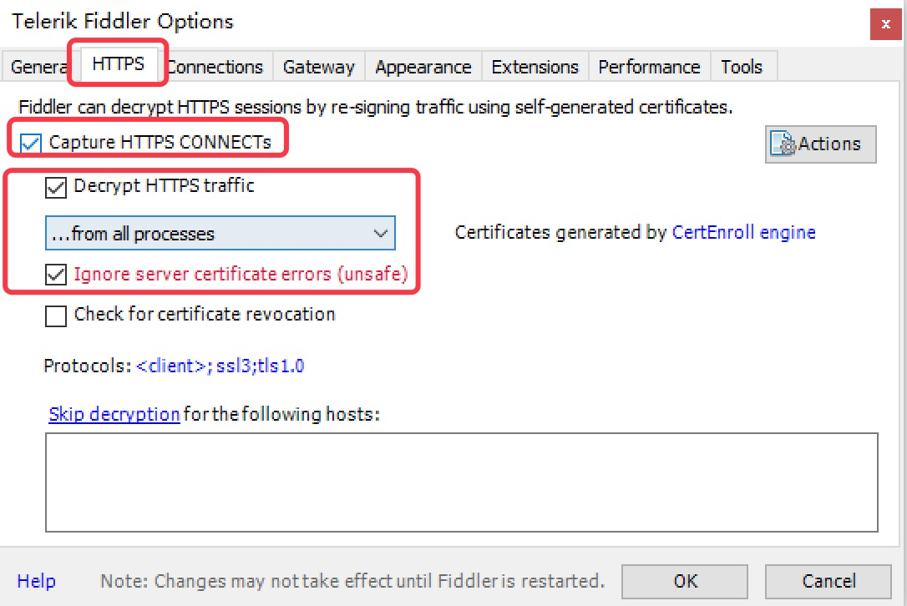
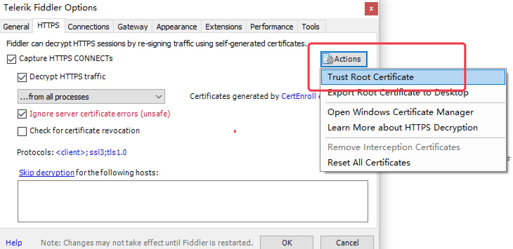
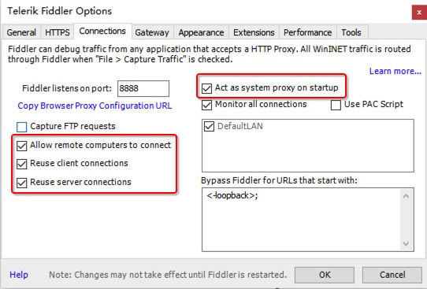
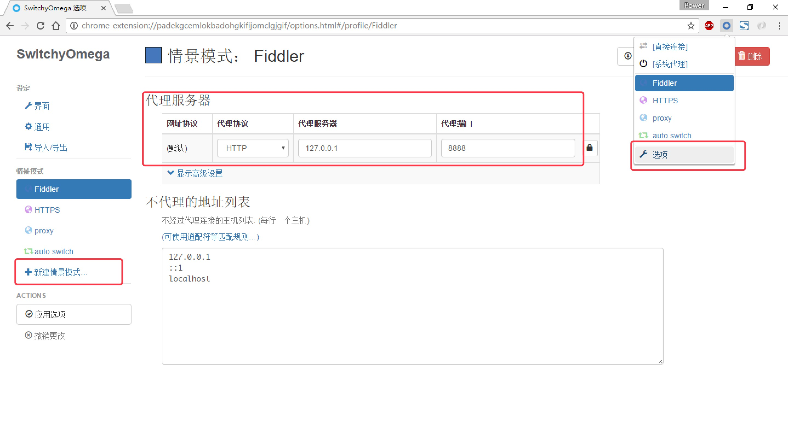
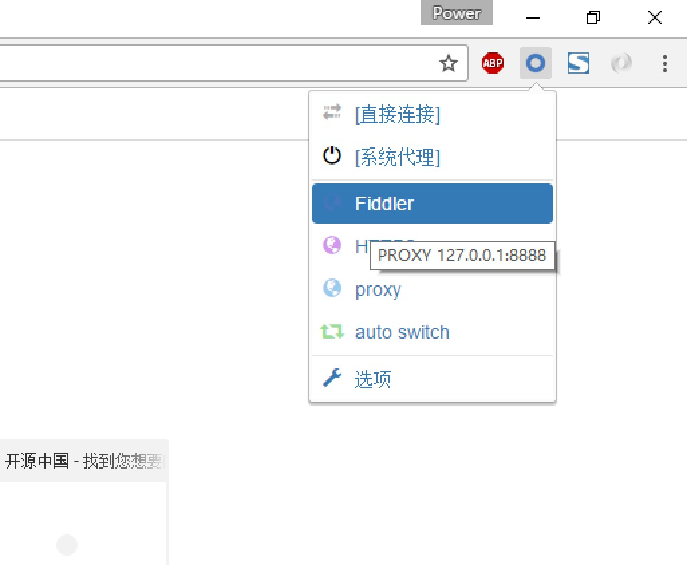
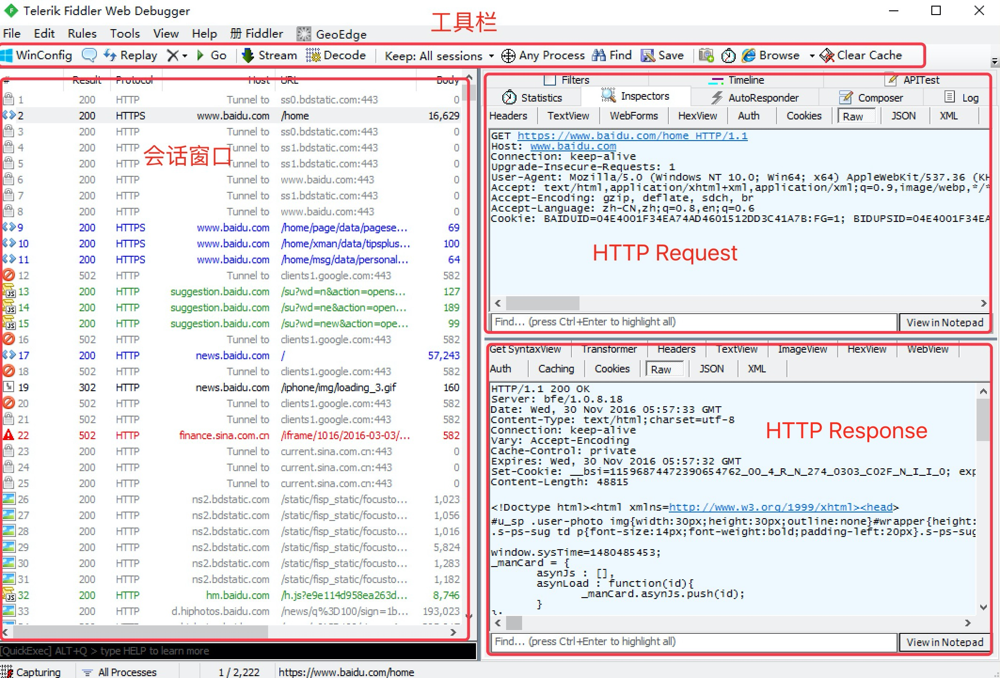

HTTP代理神器Fiddler
Fiddler是一款强大Web调试工具，它能记录所有客户端和服务器的HTTP请求。 Fiddler启动的时候，默认IE的代理设为了127.0.0.1:8888，而其他浏览器是需要手动设置。
工作原理
Fiddler 是以代理web服务器的形式工作的，它使用代理地址：127.0.0.1，端口：8888

Fiddler抓取HTTPS设置
启动Fiddler，打开菜单栏中的 Tools > Telerik Fiddler Options，打开“Fiddler Options”对话框。

对Fiddler进行设置：
- 打开工具栏->Tools->Fiddler Options->HTTPS，
- 选中Capture HTTPS CONNECTs (捕捉HTTPS连接)，
- 选中Decrypt HTTPS traffic（解密HTTPS通信）
- 另外我们要用Fiddler获取本机所有进程的HTTPS请求，所以中间的下拉菜单中选中...from all processes （从所有进程）
选中下方Ignore server certificate errors（忽略服务器证书错误）

为 Fiddler 配置Windows信任这个根证书解决安全警告：Trust Root Certificate（受信任的根证书）。

Fiddler 主菜单 Tools -> Fiddler Options…-> Connections
- 选中Allow remote computers to connect（允许远程连接）
Act as system proxy on startup（作为系统启动代理）

重启Fiddler，使配置生效（这一步很重要，必须做）。
Fiddler 如何捕获Chrome的会话
安装SwitchyOmega 代理管理 Chrome 浏览器插件

如图所示，设置代理服务器为127.0.0.1:8888

通过浏览器插件切换为设置好的代理。

Fiddler界面
设置好后，本机HTTP通信都会经过127.0.0.1:8888代理，也就会被Fiddler拦截到。

请求 (Request) 部分详解
- Headers —— 显示客户端发送到服务器的 HTTP 请求的 header，显示为一个分级视图，包含了 Web 客户端信息、Cookie、传输状态等。
- Textview —— 显示 POST 请求的 body 部分为文本。
- WebForms —— 显示请求的 GET 参数 和 POST body 内容。
- HexView —— 用十六进制数据显示请求。
- Auth —— 显示响应 header 中的 Proxy-Authorization(代理身份验证) 和 Authorization(授权) 信息.
- Raw —— 将整个请求显示为纯文本。
- JSON - 显示JSON格式文件。
- XML —— 如果请求的 body 是 XML 格式，就是用分级的 XML 树来显示它。
响应 (Response) 部分详解
- Transformer —— 显示响应的编码信息。
- Headers —— 用分级视图显示响应的 header。
- TextView —— 使用文本显示相应的 body。
- ImageVies —— 如果请求是图片资源，显示响应的图片。
- HexView —— 用十六进制数据显示响应。
- WebView —— 响应在 Web 浏览器中的预览效果。
- Auth —— 显示响应 header 中的 Proxy-Authorization(代理身份验证) 和 Authorization(授权) 信息。
- Caching —— 显示此请求的缓存信息。
- Privacy —— 显示此请求的私密 (P3P) 信息。
- Raw —— 将整个响应显示为纯文本。
- JSON - 显示JSON格式文件。
- XML —— 如果响应的 body 是 XML 格式，就是用分级的 XML 树来显示它 。